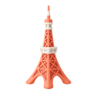

나에게 맞는 여행지는?
도쿄, 일본
(Tokyo)
“24시간 멈추지 않는 도시,
도쿄가 당신을 기다립니다.”
 도쿄는 이런 곳이에요
도쿄는 이런 곳이에요
- 아시아 No.1도시, 트렌드와 전통이 숨쉬는 도시
- 시부야, 도쿄타워, 스카이트리까지 볼거리 천국
- 미슐랭 스타 최다, 미식의 수도

 놓치면 안 될 명소
놓치면 안 될 명소

 도쿄에서 먹어보아야할 음식
도쿄에서 먹어보아야할 음식

다른 여행지도 추천 받고 싶다면?
다시 선택하러 가기